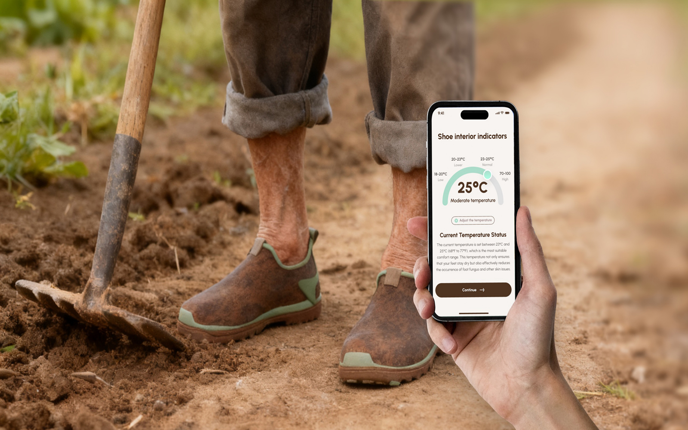

02 / WEARABLE · BIOMATERIALS · SOCIAL IMPACT
Eco-Shoe Care
A wearable footwear and biomaterial system exploring how everyday objects can become accessible tools for health and wellbeing.

01 / OVERVIEW
Health support embedded in everyday footwear.
Eco-Shoe Care investigates the intersection of footwear, biomaterials and smart technology. The project uses an everyday object as an entry point for a more accessible health-support experience.
02 / DESIGN LOGIC
Material
Exploring biomaterial choices as part of the functional and experiential qualities of the product.
Wearability
Considering comfort, routine and unobtrusive interaction as essential parts of health-oriented wearable design.
System
Moving beyond a single object toward a connected service and support ecosystem.
Impact
Using design to address practical wellbeing needs through accessible, everyday interventions.
03 / PROCESS
From material exploration to system thinking.
The project combines material exploration, footwear design, interaction concepts and system mapping. Replace this paragraph with your original research process, sketches, prototypes and testing evidence.
04 / REFLECTION
The value of wearable health design is not only in sensing or technology, but in how naturally it becomes part of everyday life.